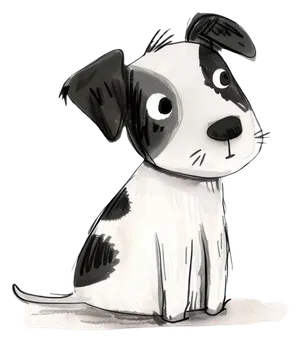
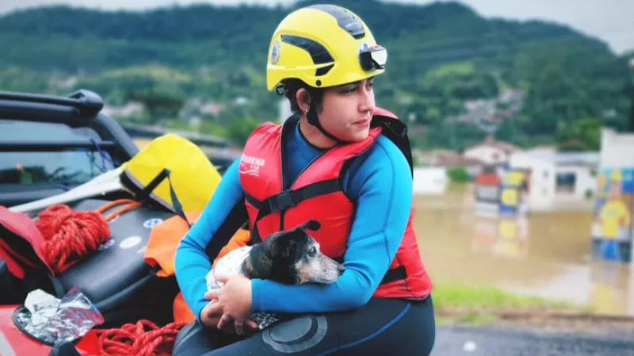
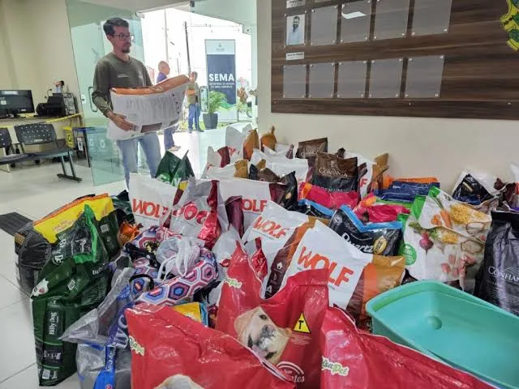
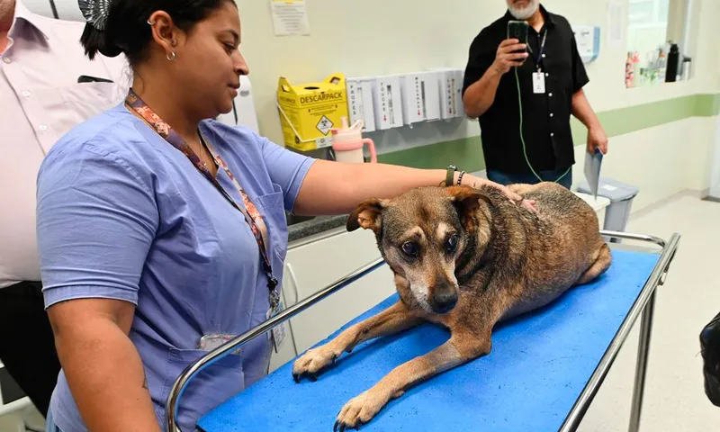
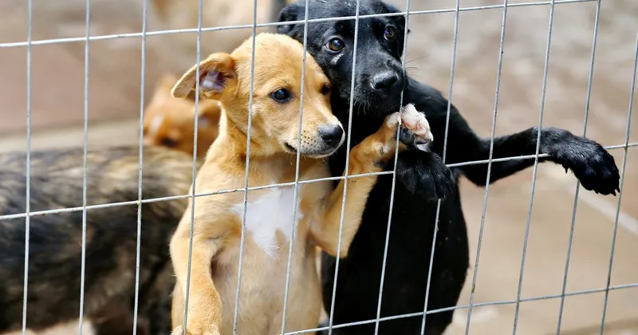

Resgate Animal
O Projeto Resgate Animal é responsável por acolher cães e gatos abandonados, feridos ou vítimas de maus-tratos. Após o resgate, os animais recebem atendimento veterinário, alimentação, cuidados diários e um ambiente seguro para se recuperarem até encontrarem um novo lar.

Campanhas de Alimentação
As campanhas de alimentação arrecadam ração, medicamentos e materiais de higiene para animais resgatados e famílias que cuidam de animais em situação de risco. Essas ações garantem que muitos animais recebam os cuidados básicos necessários.

Castração Solidária
A Castração Solidária promove campanhas para incentivar a castração de cães e gatos de forma acessível. O projeto busca reduzir o abandono, prevenir doenças e contribuir para o controle responsável da população de animais.

Feira de Adoção
As feiras de adoção aproximam animais resgatados de famílias que desejam adotar com responsabilidade. Antes da adoção, todos os animais passam por avaliação veterinária e recebem os cuidados necessários para iniciar uma nova vida.
